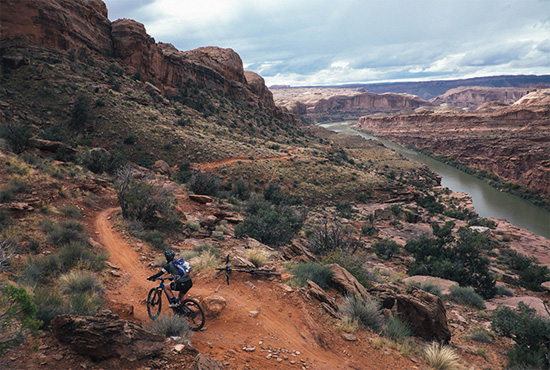
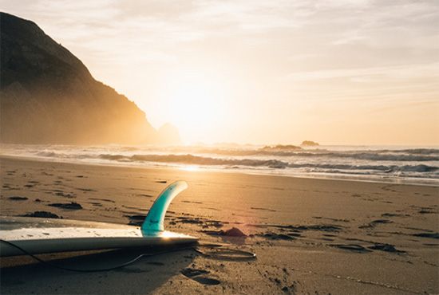

HomeBlog
Popular Destinations
16 Math 2015
At the end of 2013, I started leading group trips. I’ve done four so far and have really enjoyed them. I like meeting readers, exposing others to my travel style and taking them around to some of my favorite places in Europe. I want others to fall in love with the places that made me love travel so much.
Stakeholders donation Action Against Hunger cross-agency coordination meaningful Bill and Melinda Gates life-saving.
New tools have emerged to address the challenges of responsive web design — tools such as Adobe Reflow and the recently released Macaw. Today, we’ll look at one that I have tested extensively in the last few months. Though not perfect, it’s been a leap forward in productivity for the team that I work with. Its name is Webflow, and it could be the solution to the problems you face with static design comps produced in Photoshop and Fireworks.
Getting Started
Getting started in Webflow is a relatively simple. Head over to the website, create an account, and give the free trial a go. Make sure to open the interface in the latest version of Google Chrome because it is currently the only browser that is fully supported.
New tools have emerged to address the challenges of responsive web design — tools such as Adobe Reflow and the recently released Macaw. Today, we’ll look at one that I have tested extensively in the last few months. Though not perfect, it’s been a leap forward in productivity for the team that I work with. Its name is Webflow, and it could be the solution to the problems you face with static design comps produced in Photoshop and Fireworks.
- December14,2014
- by Nick Frost
- in Travels
- 2 comments
- Permalink
Written by Nick Frost
Nick Frost has more than 10 years experience in the communications industry, including writing for print and online publications, and design and editing. You can connect with her on Twitter @Jane and Google+.
View all posts by: Nick Frost
2 responses
Written by Nick Frost
Nick Frost has more than 10 years experience in the communications industry, including writing for print and online publications, and design and editing. You can connect with her on Twitter @Jane and Google+.
View all posts by: Nick Frost
Written by Nick Frost
Nick Frost has more than 10 years experience in the communications industry, including writing for print and online publications, and design and editing. You can connect with her on Twitter @Jane and Google+.
View all posts by: Nick Frost
Contact form
Everything You Need to Know About Using Smartphones When You Travel
16 Math 2015
At the end of 2013, I started leading group trips. I’ve done four so far and have really enjoyed them. I like meeting readers, exposing others to my travel style and taking them around to some of my favorite places in Europe. I want others to fall in love with the places that made me love travel so much.
Stakeholders donation Action Against Hunger cross-agency coordination meaningful Bill and Melinda Gates life-saving.
New tools have emerged to address the challenges of responsive web design — tools such as Adobe Reflow and the recently released Macaw. Today, we’ll look at one that I have tested extensively in the last few months. Though not perfect, it’s been a leap forward in productivity for the team that I work with. Its name is Webflow, and it could be the solution to the problems you face with static design comps produced in Photoshop and Fireworks.
12 Things Not to Do When You Travel
16 Math 2015
At the end of 2013, I started leading group trips. I’ve done four so far and have really enjoyed them. I like meeting readers, exposing others to my travel style and taking them around to some of my favorite places in Europe. I want others to fall in love with the places that made me love travel so much.
Stakeholders donation Action Against Hunger cross-agency coordination meaningful Bill and Melinda Gates life-saving.
New tools have emerged to address the challenges of responsive web design — tools such as Adobe Reflow and the recently released Macaw. Today, we’ll look at one that I have tested extensively in the last few months. Though not perfect, it’s been a leap forward in productivity for the team that I work with. Its name is Webflow, and it could be the solution to the problems you face with static design comps produced in Photoshop and Fireworks.
Categories
Recent Posts
My Group Tours: Two Trips to Europe!
At the end of 2013, I started leading group trips. I’ve done four so far and have really enjoyed them. I like meeting readers...
14 March 2015My Group Tours: Two Trips to Europe!
At the end of 2013, I started leading group trips. I’ve done four so far and have really enjoyed them. I like meeting readers...
14 March 2015My Group Tours: Two Trips to Europe!
At the end of 2013, I started leading group trips. I’ve done four so far and have really enjoyed them. I like meeting readers...
14 March 2015